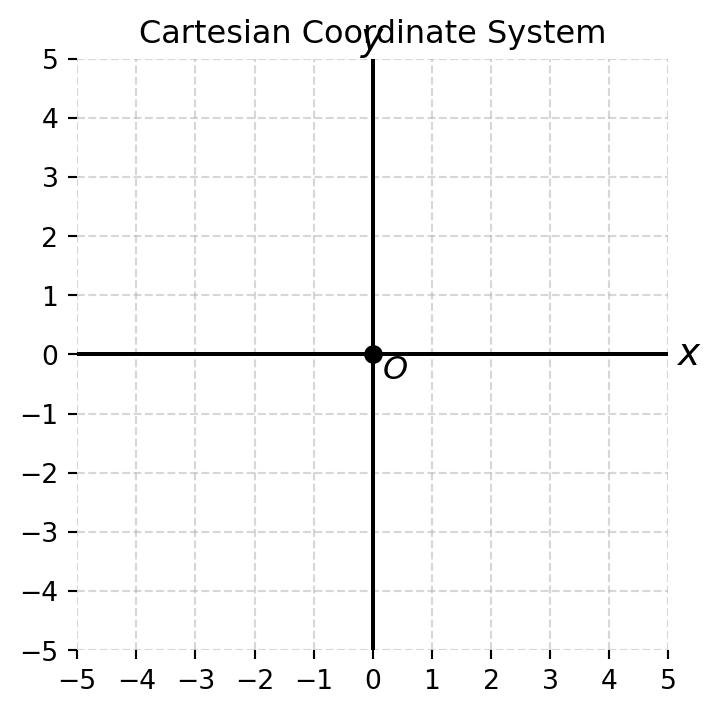
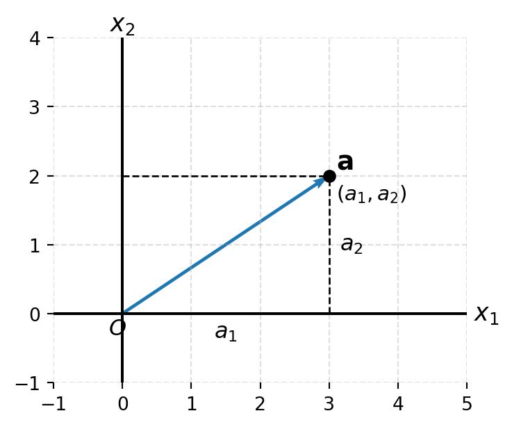
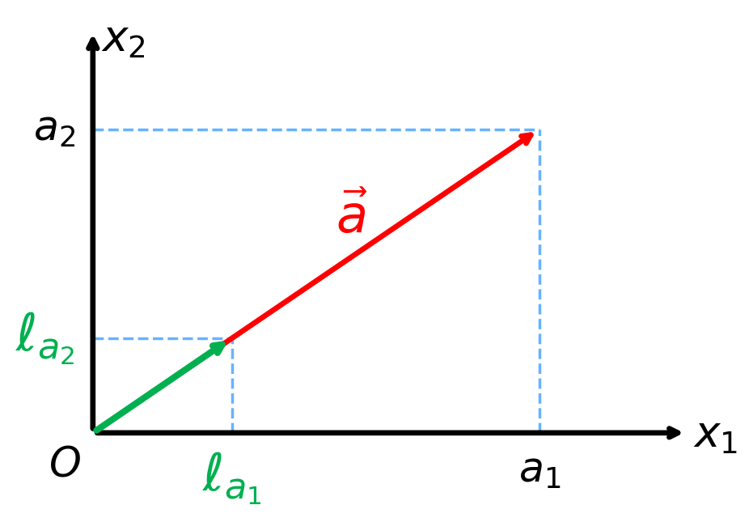
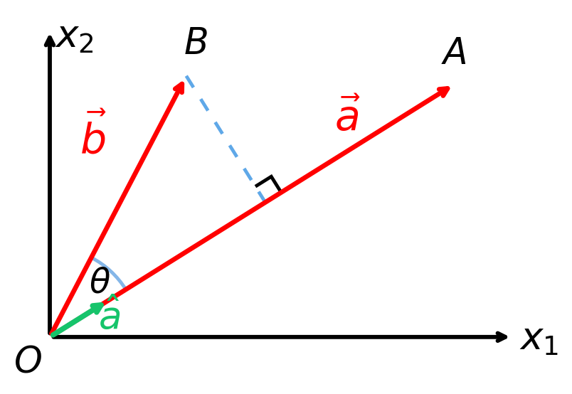
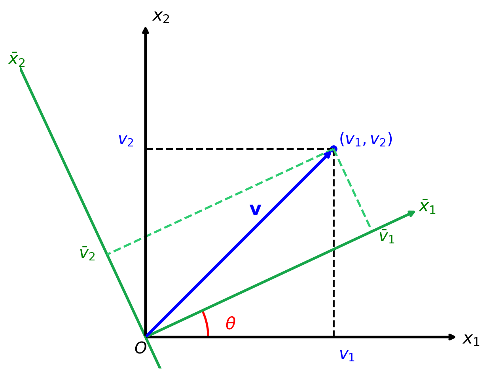
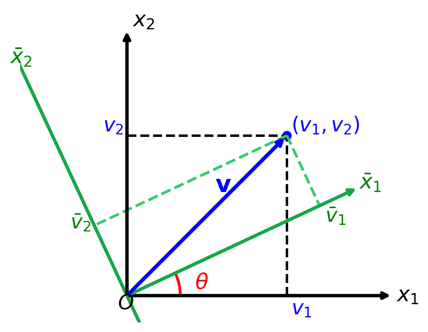
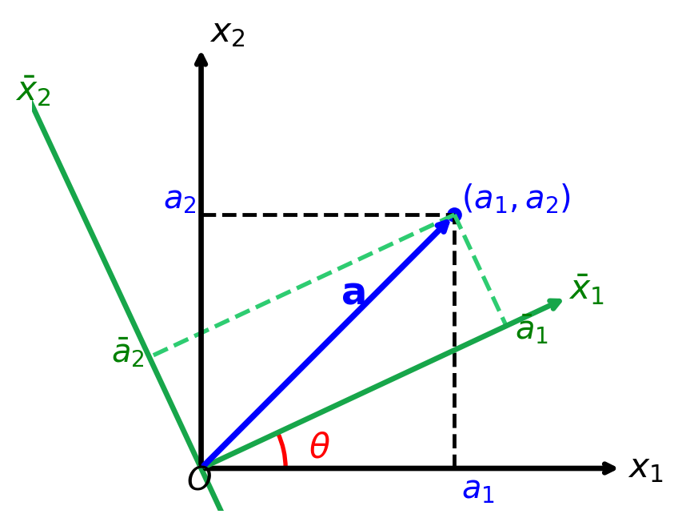
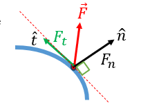

Lecture 2 — Vector Calculus for Mathematical Modelling
MATH3001(5005) — Applied Mathematical Modelling (Topics)
Prof. Benchawan Wiwatanapataphee
Curtin University
28 Jul 2026
Outline
- Index Notation
- Convention and Rules
- Kronecker Delta
- Manipulations with the Index Notation
- Levi-Civita Symbol
- Orthogonal Rotation of Cartesian Axes
- Cartesian Tensors
- Cartesian Vector (Cartesian Tensor of Order One)
- Second Order Cartesian Tensors
- Algebra of Tensors
- Canonical Form of a Symmetric Tensor
- Levi-Civita Symbol in \(n\) Dimensions
Objectives
By the end of this topic, students will
- Understand the notation, properties, and operations of Cartesian tensors, and
- Apply tensor algebra and coordinate transformations to formulate and
- Analyze problems in continuum mechanics and related engineering applications.
Learning Outcomes
- Use index notation, the Kronecker delta, and the Levi-Civita symbol.
- Perform basic manipulations using index notation.
- Apply orthogonal coordinate transformations.
- Identify and operate on first- and second-order Cartesian tensors.
- Apply basic tensor algebra and obtain the canonical form of symmetric tensors.
1. Index Notation and Cartesian Tensors
In applied mathematical modelling, especially continuum mechanics, we often use tensors (e.g., stress and strain) alongside scalars and vectors.
1.1 Index Notation
- In index notation, we use the more systematic labelling \((x_1,x_2,x_3)\) for the tri-rectangular Cartesian coordinates of a point so that
\[ (x_1,x_2,x_3) \text{ represents } (x,y,z), \]
\[ (Ox_1,Ox_2,Ox_3) \text{ represents } (Ox,Oy,Oz), \]
\[ (v_1,v_2,v_3) \text{ represents } (v_x,v_y,v_z). \]
- We use free index, summation index, Kronecker Delta and various other symbols to simplify presentation of complex equations.
Convention and Rules - Free Index
Consider
\[ \begin{aligned} v_\color{red}{1} &= a_{\color{red}{1}1}\bar{v}_1 + a_{\color{red}{1}2}\bar{v}_2, \\ v_\color{red}{2} &= a_{\color{red}{2}1}\bar{v}_1 + a_{\color{red}{2}2}\bar{v}_2. \end{aligned} \tag{1}\]
- If we let the subscript \(i\) take on the numbers \(1\) and \(2\) one at a time,
- we can write the above two equations as,
\[ v_\color{red}{i} = a_{\color{red}{i}1}\bar{v}_1 + a_{\color{red}{i}2}\bar{v}_2. \tag{2}\]
Rule 1
If a subscript appears precisely once in each term of an expression or equation, it is called a “free index”, and is to be successively assigned each value in its range.
If there are two free indices appearing in an equation such as
\[ B_{ij} = A_{ip}A_{jp}, \qquad (i=1,2,3,4;\ j=1,2,3,4) \]
then the equation is a short-hand writing of \(16\) equations.
Convention and Rules - Summation Index
Equation 2 can be written as
\[ v_i = \sum_{j=1}^2 a_{ij}\bar{v}_j. \tag{3}\]
- If we adopt the convention that a subscript which appears precisely twice in a term indicates a summation with the index running through the integers over the index range, we can write Equation 3 as
\[ v_i = a_{ij}\bar{v}_j. \tag{3.4} \]
Rule 2
If a subscript occurs precisely twice in one term of an expression, it may or may not occur precisely twice in any other term. It is to be summed over its range of values, and is known as a “dummy index” or “summation index”.
Remark 1.
The repeated index can be assigned any letter and so \[ v_i = a_{i\color{red}{j}}\bar{v}_\color{red}{j} = a_{i\color{red}{p}}\bar{v}_\color{red}{p}. \]
Remark 2.
The particular choice of subscripts (free index or summation index) is immaterial provided that the rules are all satisfied. For example, the following equations are equivalent (represent exactly the same equations), \[ v_\color{red}{i} = a_{\color{red}{i}j}\bar{v}_j, \qquad v_\color{red}{k} = a_{\color{red}{k}p}\bar{v}_p. \]
Convention and Rules - Differentiation Notation
Rule 3
A comma represents differentiation.
For example, \(\displaystyle v_{i,j} \quad \text{ denotes } \quad \frac{\partial v_i}{\partial x_j}.\)
Convention and Rules - Range of Indices
Rule 4
If a subscript occurs more than twice in one term of an expression or equation, it is a mistake.
For example, the following equations are meaningless
\[ v_i = a_{ii}v_i. \]
- Remark. Lower case literal subscripts shall have all values over their index range.
1.1.2 Kronecker Delta \(\delta_{ij}\) (Substitution Tensor)
The Kronecker delta, denoted by \(\delta_{ij}\), is defined by \(\displaystyle \delta_{ij} = \begin{cases} 1 & \text{if } i=j, \\ 0 & \text{if } i \ne j. \end{cases}\)
Example 1
\[ l_{11}l_{11} + l_{12}l_{12} = 1, \]
\[ l_{21}l_{21} + l_{22}l_{22} = 1, \]
\[ l_{11}l_{21} + l_{12}l_{22} = 0, \]
\[ l_{21}l_{11} + l_{22}l_{12} = 0 \]
\[ l_{1j}l_{1j} = 1, \]
\[ l_{2j}l_{2j} = 1, \]
\[ l_{1j}l_{2j} = 0, \]
\[ l_{2j}l_{1j} = 0. \]
- By using \(\delta_{ij}\), the above \(4\) equations can be expressed by a single expression
\[ l_{kj}l_{\ell j} = \delta_{k\ell}. \]
Example 2
\[ \delta_{\color{red}{1}p}a_p = \delta_{\color{red}{1}1}a_1 + \delta_{\color{red}{1}2}a_2 + \delta_{\color{red}{1}3}a_3 = a_\color{red}{1}, \]
\[ \delta_{\color{red}{2}p}a_p = \delta_{\color{red}{2}1}a_1 + \delta_{\color{red}{2}2}a_2 + \delta_{\color{red}{2}3}a_3 = a_\color{red}{2}, \]
\[ \delta_{\color{red}{3}p}a_p = \delta_{\color{red}{3}1}a_1 + \delta_{\color{red}{3}2}a_2 + \delta_{\color{red}{3}3}a_3 = a_\color{red}{3}, \]
we have in general
\[ \delta_{\color{red}{i}p}a_p = a_\color{red}{i} \qquad \text{(i.e, replace the index $p$ of $a$ by $i$).} \]
Similarly, we can show that
\[ \delta_{ip}T_{pj} = T_{ij}. \]
Expand the repeated index (p):
\[ \delta_{\color{red}{1}p}T_{pj} = \delta_{\color{red}{1}1}T_{1j} + \delta_{\color{red}{1}2}T_{2j} + \delta_{\color{red}{1}3}T_{3j} = T_{\color{red}{1}j}, \]
\[ \delta_{\color{red}{2}p}T_{pj} = \delta_{\color{red}{2}1}T_{1j} + \delta_{\color{red}{2}2}T_{2j} + \delta_{\color{red}{2}3}T_{3j} = T_{\color{red}{2}j}, \]
\[ \delta_{\color{red}{3}p}T_{pj} = \delta_{\color{red}{3}1}T_{1j} + \delta_{\color{red}{3}2}T_{2j} + \delta_{\color{red}{3}3}T_{3j} = T_{\color{red}{3}j}, \]
Hence, in general,
\[ \delta_{\color{red}{i}p}T_{pj} = T_{\color{red}{i}j}, \]
- Kronecker delta replaces the summed index (p) by (i) while leaving the free index (j) unchanged.
If \(\mathbf e_1\), \(\mathbf e_2\) and \(\mathbf e_3\) are unit vectors perpendicular to each other, then
\[ \mathbf e_i \cdot \mathbf e_j = \delta_{ij}. \]
1.1.3 Manipulations with the Index Notation
Substitution
If
\[ a_i = T_{ip}b_p, \tag{4}\]
\[ b_i = V_{ip}c_p, \tag{5}\]
- In order to substitute \(b_i\) in Equation 5 into Equation 4,
- we first need to change the free index in Equation 5 from \(i\) to \(p\) and the dummy index \(p\) to some other letter so that
\[ b_p = V_{pq}c_q. \tag{6}\]
Now substituting Equation 6 into Equation 4 yields
\[ a_i = T_{ip}V_{pq}c_q. \]
Multiplication
If
\[ u = a_ib_i, \qquad v = c_id_i, \]
then
\[ uv = a_ib_ic_\color{red}{n}d_\color{red}{n}. \]
It is important to note that
\[ \color{red}{uv \ne a_ib_ic_id_i \ne \sum_{i=1}^3 a_ib_ic_id_i.} \]
Factorisation
Consider
\[ T_{ij}n_\color{red}{j} - \lambda n_\color{red}{i} = 0. \tag{7}\]
Using the Kronecker delta, we have
\[ n_\color{red}{i} = \delta_{\color{red}{i}j}n_j \]
and thus Equation 7 becomes
\[ T_{ij}n_j - \lambda \color{red}{\delta_{ij}n_j} = 0 \]
which gives
\[ (T_{ij} - \lambda\delta_{ij})n_j = 0. \]
1.2 Orthogonal Rotation of Cartesian Axes
1.2.1 Cartesian Coordinate System
- In ordinary 2-D space, the system defined by \(2\) mutually orthogonal directions with equal units of measurements is called Cartesian frame of reference.
1.2.2 Cartesian Vectors and Direction Cosines
- A Cartesian vector \(\mathbf a\) in 2-D is a quantity with two components \(a_1\) and \(a_2\) expressed with a Cartesian frame of reference, i.e.
\[ \mathbf a=(a_1,a_2). \]


Let \(\hat{\mathbf a}\) be a unit vector in \(\mathbf a\), then the components of \(\hat{\mathbf a}\) along \(x_1\) and \(x_2\) are respectively
- \(\ell_{a1}\) = cosine of the angle between \(\hat{\mathbf a}\) and \(Ox_1\),
- \(\ell_{a2}\) = cosine of the angle between \(\hat{\mathbf a}\) and \(Ox_2\).
We define the unit vector
- \(\hat{\mathbf a} = (\ell_{a1},\ell_{a2})\) as the direction cosines of \(\mathbf a\).
With the direction cosines, \(\mathbf a\) can be expressed as \(\mathbf a = |\mathbf a|\hat{\mathbf a}\).
1.2.3 Scalar Product of Two Vectors and Projection of a Vector on a Line

Let \(\overrightarrow{OA}=\mathbf a\), \(\overrightarrow{OB}=\mathbf b\).
- Then the scalar product of \(\mathbf a\) and \(\mathbf b\) is defined as
\[ \mathbf a \bullet \mathbf b = |\mathbf a||\mathbf b|\cos\theta = a_1b_1 + a_2b_2. \]
Let \(\hat{\mathbf a}\) be a unit vector on \(\mathbf a\), then
\[ \mathbf b \bullet \hat{\mathbf a} = |\mathbf b|\cos\theta, \]
- It indicates that the projection of \(\mathbf b\) on a line is the scalar product of \(\mathbf b\) with a unit vector along the line.
1.2.4 Rotation of Axes
Consider a Cartesian coordinate system \(Ox_1x_2\) that is rotated by an arbitrary angle to obtain a new coordinate system \(O\bar{x}_1\bar{x}_2\).

- A vector \(\mathbf{v}\) remains the same physical quantity, but its components depend on the chosen coordinate system.
- Its components are
- \((v_1, v_2)\) in the original frame \(Ox_1x_2\)
- \((\bar{v}_1, \bar{v}_2)\) in the rotated frame \(O\bar{x}_1\bar{x}_2\).
Let \(l_{ij}\) be the cosine of the angle between the \(Ox_i\) axis and the \(O\bar{x}_j\) axis.
The unit vector (direction cosines) of the \(O\bar{x}_j\) axis in the new system is
\[ \hat{x}_j=(l_{j1},l_{j2}). \]
Note: The unit vector (direction cosines) of the \(O\bar{x}_j\) axis in the old system are \[ \hat{x}_\color{red}{j}=(l_{1\color{red}{j}},l_{2\color{red}{j} }). \]
- In system \(Ox_1x_2\), the projection of \(\mathbf v=(v_1,v_2)\) on the \(O\bar{x}_j\) axis is equal to the scalar product of \(\mathbf v\) with a unit vector along \(O\bar{x}_j\), we thus have
\[ \bar{v}_\color{red}{1} = \mathbf{v} \bullet \hat{\mathbf{x}}_\color{red}{1} = (v_1,v_2) \bullet (l_{1\color{red}{1}},l_{2\color{red}{1}}) = l_{\color{green}{1}\color{red}{1}}v_\color{green}{1} + l_{\color{green}{2}\color{red}{1}}v_\color{green}{2} = l_{i\color{red}{1}}v_i, \]
\[ \bar{v}_2 = \mathbf{v} \bullet \hat{\mathbf{x}}_2 = (v_1,v_2) \bullet (l_{12},l_{22}) = l_{12}v_1 + l_{22}v_2 = l_{i2}v_i. \]
Example
Given \(\mathbf v=(4,2)\). Suppose the new coordinate system \(O\bar{x}_1\bar{x}_2\) is obtained by rotating the old system \(Ox_1x_2\) counterclockwise by \(30^\circ\). Find components of \(\mathbf v\) in the new system.
- Then the direction cosine matrix is
\[ [l_{ij}] = \begin{bmatrix} \cos30^\circ & -\sin30^\circ\\ \sin30^\circ & \cos30^\circ \end{bmatrix} = \begin{bmatrix} 0.866 & -0.500\\ 0.500 & 0.866 \end{bmatrix}. \]
The components of \(\mathbf{v}=(4,2)\) in the rotated coordinate system are
\[ \bar{v}_j=l_{ij}v_i. \]
Hence,
\[ \begin{aligned} \bar{v}_1 &=l_{11}v_1+l_{21}v_2\\ &=(0.866)(4)+(0.500)(2)\\ &=4.464, \end{aligned} \]
and
\[ \begin{aligned} \bar{v}_2 &=l_{12}v_1+l_{22}v_2\\ &=(-0.500)(4)+(0.866)(2)\\ &=-0.268. \end{aligned} \]
Therefore,
\[ \boxed{\bar{\mathbf v}=(4.464,\,-0.268).} \]
Recovering the original components
Using
\[ v_j=l_{ji}\bar{v}_i, \]
we obtain
\[ \begin{aligned} v_1 &=l_{11}\bar{v}_1+l_{12}\bar{v}_2\\ &=(0.866)(4.464)+(-0.500)(-0.268)\\ &\approx4, \end{aligned} \]
\[ \begin{aligned} v_2 &=l_{21}\bar{v}_1+l_{22}\bar{v}_2\\ &=(0.500)(4.464)+(0.866)(-0.268)\\ &\approx2. \end{aligned} \]
Thus,
\[ \mathbf{v}=(4,2),\quad\text{which confirms that}\quad \bar{v}_j=l_{ij}v_i,\qquad v_j=l_{ji}\bar{v}_i. \]

In system \(O\bar{x}_1\bar{x}_2\),
- the projection of \(\bar{\mathbf{v}}=(\bar{v}_1,\bar{v}_2)\) on the \(Ox_j\) axis is equal to the scalar product of \(\bar{\mathbf{v}}\) with a unit vector along \(Ox_j\),
Thus, we have
\[ v_1 = \bar{\mathbf{v}} \bullet \hat{\mathbf{x}}_1 = (\bar{v}_1,\bar{v}_2) \bullet (l_{11},l_{12}) = l_{11}\bar{v}_1 + l_{12}\bar{v}_2 = l_{1i}\bar{v}_i, \]
\[ v_2 = \bar{\mathbf{v}} \bullet \hat{x}_2 = (\bar{v}_1,\bar{v}_2) \bullet (l_{21},l_{22}) = l_{21}\bar{v}_1 + l_{22}\bar{v}_2 = l_{2i}\bar{v}_i. \]
\[ \therefore\,\,\bar{v}_j = l_{ij}v_i, \qquad v_j = l_{ji}\bar{v}_i. \]
Example
Suppose the coordinate system \(O\bar{x}_1\bar{x}_2\) is obtained by rotating \(Ox_1x_2\) counterclockwise by \(30^\circ\).
- Then the direction cosine matrix is
\[ [l_{ij}] = \begin{bmatrix} \cos30^\circ & -\sin30^\circ\\ \sin30^\circ & \cos30^\circ \end{bmatrix} = \begin{bmatrix} 0.866 & -0.500\\ 0.500 & 0.866 \end{bmatrix}. \]
- The unit vector along the \(Ox_1\)-axis, and \(Ox_2\)-axis expressed in the rotated system is
\[ \hat{\mathbf x}_1=(l_{11},l_{12}) =(0.866,-0.500), \qquad \hat{\mathbf{x}}_2=(l_{21},l_{22}) =(0.500,0.866). \]
Suppose the vector has components in the rotated system as \(\bar{\mathbf v}=(3,2)\), we have
\[ \begin{aligned} v_1 &=\bar{\mathbf v}\bullet\hat{\mathbf x}_1\\ &=(3,2)\bullet(0.866,-0.500)\\ &=(0.866)(3)+(-0.500)(2)\\ &=1.598. \end{aligned} \]
\[ \begin{aligned} v_2 &=\bar{\mathbf v}\bullet\hat{\mathbf x}_2\\ &=(3,2)\bullet(0.500,0.866)\\ &=(0.500)(3)+(0.866)(2)\\ &=3.232. \end{aligned} \]
\[ \therefore\mathbf v=(1.598,\;3.232). \]
This agrees with the transformation formulas
\[ v_1=l_{11}\bar v_1+l_{12}\bar v_2, \qquad v_2=l_{21}\bar v_1+l_{22}\bar v_2. \]
Properties of Direction Cosines \(l_{ij}\)
As \(\hat{x}_1=(l_{11},l_{12})\) and \(\hat{x}_2=(l_{21},l_{22})\) are orthogonal unit vectors,
- we have
\[ (l_{11},l_{12}) \bullet (l_{11},l_{12}) = l_{11}^2 + l_{12}^2 = 1, \]
\[ (l_{11},l_{12}) \bullet (l_{21},l_{22}) = l_{11}l_{21} + l_{12}l_{22} = 0 \]
or in index notation,
\[ l_{ki}l_{\ell i} = \delta_{k\ell}\qquad \text{or} \qquad l_{ki}l_{\ell i} = \delta_{k\ell}. \]
1.3 Cartesian Vectors and Tensors
1.3.1 First-Order Cartesian Vectors

\(\hat{x}_j = (l_{1j},l_{2j})\) are the direction cosines of the \(O\bar{x}_j\) axis with respect to the coordinate frame \(Ox_1x_2\).
Definition. A Cartesian vector, \(\mathbf{a}\), in two dimensions is a quantity with two components \(a_1\) and \(a_2\) in the Cartesian frame \(Ox_1x_2\), which, under rotation of the coordinate frame to \(O\bar{x}_1\bar{x}_2\), become components \(\bar{a}_1\) and \(\bar{a}_2\) where
\[ \bar{a}_j = \mathbf{a} \bullet \hat{x}_j = (a_1,a_2) \bullet (l_{1j},l_{2j}) = l_{ij}a_i. \tag{8}\]
Example. Consider a force \(\mathbf F\) acting at a point \(P\) on the surface of an object.

Let the components of the force in the \(x_1\) and the \(x_2\) directions be \(f_1\) and \(f_2\).
Direction cosine of the outward normal \(\mathbf n\) at \(P\) is \((n_1,n_2)\)
Direction cosine of \(\hat{\mathbf t}\) is \((t_1,t_2)\).
Then, we can use Equation 8 to calculate
\[ \text{normal force: } \qquad F_n = \mathbf F \bullet \mathbf n = (f_1,f_2) \bullet (n_1,n_2) = f_1n_1 + f_2n_2=f_in_i, \]
\[ \text{tangential force: } \qquad F_t = \mathbf F \bullet \hat{\mathbf t} = (f_1,f_2) \bullet (t_1,t_2) = f_1t_1 + f_2t_2=f_it_i. \]
1.3.2 Second Order Cartesian Tensors
Definition. A second order Cartesian tensor, \(A\), in two dimensions is an entity having \(4\) components \(A_{ij}\), \(i,j=1,2\), in the Cartesian frame of reference \(Ox_1x_2\) which on rotation of the frame to \(Opq\) become
\[ A_{pq} = l_{ip}l_{jq}A_{ij}, \]
- \(l_p=(l_{1p},l_{2p})\) and \(l_q=(l_{1q},l_{2q})\) are the direction cosines of the \(Op\) and \(Oq\) axes with respect to the coordinate frame \(Ox_1x_2\).
By the orthogonal properties of \(l_{rs}\), we also have the inverse transformation
\[ A_{ij} = l_{ip}l_{jq}A_{pq}. \]
Remarks
- A 2nd order tensor may be written in matrix form
\[ A= \begin{pmatrix} A_{11} & A_{12} \\ A_{21} & A_{22} \end{pmatrix} \]
- The transformation law for 2nd order tensors can be expressed in terms of matrices,
\[ \bar{A} = L^TAL, \qquad A = L\bar{A}L^T. \]
Definition: Symmetric tensors
If \(A_{ij}=A_{ji}\), \(A\) is said to be symmetric. In this case, there are only \(3\) distinct components,
\[ A= \begin{pmatrix} A_{11} & A_{12} \\ A_{12} & A_{22} \end{pmatrix}. \]
Definition: Antisymmetric tensor
If \(A_{ij}=-A_{ji}\), \(A\) is said to be antisymmetric and such a tensor has the form as follows
\[ A= \begin{pmatrix} 0 & A_{12} \\ -A_{12} & 0 \end{pmatrix}. \]
Definition: Transpose of Tensors
The tensor whose \(ij\) element is \(A_{ji}\) is called the transpose \(A^T\) of \(A\).
1.3.3 ALGEBRA OF TENSORS
Scalar Multiplication and Addition
- If \(\alpha\) is a scalar and \(A\) is a second order tensor, the scalar product of \(\alpha\) and \(A\) is a tensor \(\alpha A\) each of whose components is \(\alpha\) times the corresponding component of \(A\).
Example
Let
\[ A= \begin{bmatrix} 1 & 2\\ 3 & 4 \end{bmatrix}, \qquad \alpha=3. \]
The scalar multiplication of \(A\) by \(\alpha\) is obtained by multiplying every component of \(A\) by \(3\):
\[ \alpha A = 3 \begin{bmatrix} 1 & 2\\ 3 & 4 \end{bmatrix} = \begin{bmatrix} 3 & 6\\ 9 & 12 \end{bmatrix}. \]
In component form,
\[ A_{ij} = \begin{bmatrix} 1 & 2\\ 3 & 4 \end{bmatrix}, \qquad (\alpha A)_{ij} = \alpha A_{ij}. \]
For example,
\[ (\alpha A)_{12} =\alpha A_{12} =3(2)=6,\quad\text{and}\quad (\alpha A)_{21} =\alpha A_{21} =3(3)=9. \]
Hence, every component of the tensor is multiplied by the scalar:
\[ \boxed{(\alpha A)_{ij}=\alpha A_{ij}.} \]
The sum of two second order tensors is a second order tensor each of whose components is the sum of the corresponding components of the two tensors, i.e.,
\[ (A+B)_{ij} = A_{ij} + B_{ij}. \]
Example
Let
\[ A= \begin{bmatrix} 1 & 2\\ 3 & 4 \end{bmatrix}, \qquad B= \begin{bmatrix} 5 & -1\\ 2 & 6 \end{bmatrix}. \]
- The sum of the two tensors is obtained by adding their corresponding components:
\[ A+B = \begin{bmatrix} 1+5 & 2+(-1)\\ 3+2 & 4+6 \end{bmatrix} = \begin{bmatrix} 6 & 1\\ 5 & 10 \end{bmatrix}. \]
In component form,
\[ (A+B)_{11}=A_{11}+B_{11}=1+5=6, \]
\[ (A+B)_{12}=A_{12}+B_{12}=2+(-1)=1, \]
\[ (A+B)_{21}=A_{21}+B_{21}=3+2=5, \]
\[ (A+B)_{22}=A_{22}+B_{22}=4+6=10. \]
\[ \therefore (A+B)_{ij}=A_{ij}+B_{ij}. \]
- Any tensor may be represented as the sum of a symmetric part and an antisymmetric part.
\[ A_{ij} = \frac{1}{2}(A_{ij}+A_{ji}) + \frac{1}{2}(A_{ij}-A_{ji}) \]
\[ \rightarrow\qquad\qquad A = \frac{1}{2}(A+A^T) + \frac{1}{2}(A-A^T). \]
Contraction and Multiplication of Tensors
The operation of identifying two indices of a tensor and then summing on them is known as contraction.
- The contraction of a second order tensor \(A\) is a scalar defined by
\[ A_{ii} = A_{11} + A_{22}\quad (\text{is the only contraction of } A_{ij}). \]
Tensor Products
- If \(A\) and \(B\) are two second order tensors, then
\[ C_{ijkm}=A_{ij}B_{km}\quad (\text{a fourth-order tensor.}). \]
- The product of a second-order tensor \(A\) and a vector \(\mathbf{a}\) is a vector.
- Its components are given by \((A\mathbf{a})_i = A_{ij}a_j\).
- Thus, the resulting vector has components \(A_{ij}a_j\).
Tensor–Tensor Product (Single Contraction)
The product of two second-order tensors \(A\) and \(B\) is another second-order tensor defined by
\[ (A \bullet B)_{ik} = A_{ij}B_{jk},\quad i,j,k=1,2. \]
Equivalently,
\[ A \bullet B = \{A_{ij}B_{jk}\}. \]
- The repeated index \(j\) is summed over (single contraction),
- while the free indices \(i\) and \(k\) define the components of the resulting tensor.
Double Contraction
- The doubly contracted product of two second-order tensors is a scalar defined by
\[ A : B = A_{ij}B_{ij},\qquad i,j=1,2. \]
Canonical Form of a Symmetric Tensor
If \(l\) is an arbitrary unit vector,
\(A \bullet l\) is a vector and, for certain \(l\), may have the same direction as \(l\) itself had.
The two vectors \(A \bullet l\) and \(l\) would thus differ only in magnitude and
- we might write
\[ A \bullet l = \lambda l. \]
- Writing this in component form
\[ A_{ij}l_j = \lambda l_i = \lambda\delta_{ij}l_j \]
\[ \text{or}\qquad(A_{ij}-\lambda\delta_{ij})l_j = 0. \tag{9}\]
Definition. For \(l \ne 0\), the \(\lambda\) in Equation 9 is called the eigen value of \(A\) and \(l\) is the associated eigen vector.
Now we will find the eigen values and eigen vectors.
System Equation 9 is a set of homogeneous equations for the unknowns \(l_j\) and
- so has non-zero solutions only if the determinant of the coefficient matrix vanishes.
Thus the value of \(\lambda\) must be such that
\[ \det(A_{ij}-\lambda\delta_{ij}) = \begin{vmatrix} a_{11}-\lambda & a_{12} \\ a_{12} & a_{22}-\lambda \end{vmatrix} = 0 \]
\[ \therefore \lambda_{1,2} = \frac{1}{2}(a_{11}+a_{22}) \pm \frac{1}{2}\sqrt{(a_{11}-a_{22})^2 + 4a_{12}^2}. \tag{10}\]
Assume \(\lambda_1 \ne \lambda_2\).
There will be two different eigen vectors corresponding to \(\lambda_1\) and \(\lambda_2\) respectively.
The vector \(l_j=(l_{1j},l_{2j})\) associated with \(\lambda_j\) can be determined from system Equation 9.
For \(\lambda=\lambda_1\), we have
\[ \begin{pmatrix} a_{11}-\lambda_1 & a_{12} \\ a_{12} & a_{22}-\lambda_1 \end{pmatrix} \begin{bmatrix} l_{11} \\ l_{21} \end{bmatrix} = \begin{bmatrix} 0 \\ 0 \end{bmatrix}. \tag{11}\]
As equations \(1\) and \(2\) in system Equation 11 are linearly dependent,
- we obtain from the first equation,
\[ \frac{l_{21}}{l_{11}} = \frac{\lambda_1-a_{11}}{a_{12}}. \]

Suppose the angle between the characteristic direction \((l_{11},l_{21})\) of \(\lambda_1\) and the \(x_1\) axis is \(\theta_1\), then
\[ \begin{aligned} l_{11} &= \cos\theta_1, \\ l_{21} &= \cos\left(\frac{\pi}{2}-\theta_1\right) = \sin\theta_1. \end{aligned} \]
\[ \therefore \tan\theta_1 = \frac{l_{21}}{l_{11}} = \frac{\lambda_1-a_{11}}{a_{12}}. \]
- Similarly, the characteristic direction \((l_{12},l_{22})\) of \(\lambda_2\) can be determined by
\[ \tan\theta_2 = \frac{l_{22}}{l_{12}} = \frac{\lambda_2-a_{22}}{a_{12}}. \]
Consider the rotation of the coordinate frame from \(Ox_1x_2\) to \(Ox_px_q\).
\(x_p\) and \(x_q\) be the characteristic directions corresponding to \(\lambda_p\) and \(\lambda_q\), and
\(l_{ip}\) and \(l_{iq}\) be the direction cosines of the \(Ox_p\) and \(Ox_q\) axes with respect to the original frame \(Ox_1x_2\).
Then, the components of \(A\) in the new coordinate frame are
\[ \bar{A}_{pq}=l_{ip}l_{jq}A_{ij}. \]
- Let the eigen values be \(\lambda_{(p)} \ne \lambda_{(q)}\) for \(p \ne q\) and the associated directions are
\[ (l_{1p},l_{2p})\quad\text{and} \quad (l_{1q},l_{2q}). \]
\[ \rightarrow\quad A_{ij}l_{jp} = \lambda_{(p)}l_{ip}, \qquad A_{ij}l_{jq} = \lambda_{(q)}l_{iq}. \tag{12}\]
- The repeated indices \((p)p\) do not represent summation,
- \(l_{ip}=(l_{1p},l_{2p})\) is the direction associated with \(\lambda_{(p)}\).
\[ (12)_1 \times l_{iq}: \qquad A_{ij}l_{jp}l_{iq} = \lambda_{(p)}l_{ip}l_{iq} = A_{ji}l_{ip}l_{jq}, \]
\[ (12)_2 \times l_{ip}: \qquad A_{ij}l_{jq}l_{ip} = \lambda_{(q)}l_{iq}l_{ip}. \]
As \(A_{ij}=A_{ji}\), we have from the above
\[ A_{ij}l_{ip}l_{jq} = \lambda_{(p)}l_{ip}l_{iq} = \lambda_{(q)}l_{ip}l_{iq}. \]
As \(\lambda_p \ne \lambda_q\) as assumed, the above equation is only possible if
\[ l_{ip}l_{iq} = l_{(p)} \bullet l_{(q)} = 0. \]
and so the vectors are orthogonal and thus
\[ l_{ip}l_{iq} = \delta_{pq}. \]
\[ \therefore \qquad A_{pq} = l_{ip}l_{jq}A_{ij} = \lambda_{(p)}\delta_{pq}. \]
This merely says that \(A\) has diagonal form and its diagonal components are \(\lambda_1\) and \(\lambda_2\), i.e.,
\[ \bar{A}= \begin{pmatrix} \lambda_1 & 0 \\ 0 & \lambda_2 \end{pmatrix}. \]
1.3.4 The Del Operator and the Divergence Theorem
he Del Operator \(\nabla\)
If \(\nabla\) operates on a scalar function of position \(\phi\), it produces a vector \(\nabla\phi\), i.e,
\[ \nabla = \begin{pmatrix} \dfrac{\partial}{\partial x_1} \\ \dfrac{\partial}{\partial x_2} \end{pmatrix}, \qquad \nabla\phi = \operatorname{grad}\phi = \begin{pmatrix} \dfrac{\partial\phi}{\partial x_1} \\ \dfrac{\partial\phi}{\partial x_2} \end{pmatrix}. \]
- Remark: Let \(\mathbf n\) be a unit vector, the directional derivative of \(\phi\) along \(\mathbf n\) is,
\[ \frac{\partial\phi}{\partial n} = \nabla\phi \bullet \mathbf n \]
The Divergence Operator \(\nabla \bullet\)
\[ \operatorname{div} \mathbf a = \nabla \bullet \mathbf a = a_{i,i} = \frac{\partial a_1}{\partial x_1} + \frac{\partial a_2}{\partial x_2} \]
- The Laplace Operator \(\Delta\)
\[ \Delta\phi = \nabla^2\phi = \frac{\partial^2\phi}{\partial x_1^2} + \frac{\partial^2\phi}{\partial x_2^2} = \operatorname{div}\operatorname{grad}\phi = \phi_{,ii} \]
- The Divergence Theorem
\[ \int_\Omega \nabla \bullet \mathbf a\,dV = \int_{\partial\Omega} \mathbf a \bullet \mathbf n\,dS \]
- The above equation relates a volume integral to an integral over the bounding surface.
1.3.5 Levi-Civita Symbol (Permutation Symbol)
The Levi-Civita symbol, denoted by \(\varepsilon\), is a mathematical symbol used in vector calculus, tensor analysis, linear algebra, and physics.
- It is also known as the permutation symbol because its value depends on the permutation of its indices.
Definition. In 3D, the Levi-Civita symbol is written as
\[\varepsilon_{ijk}\]
where \(i, j, k \in \{1,2,3\}\). Its values are defined as
\[\varepsilon_{ijk} = \begin{cases} +1, & \text{if } (i,j,k) \text{ is an even permutation of } (1,2,3), \\ -1, & \text{if } (i,j,k) \text{ is an odd permutation of } (1,2,3), \\ 0, & \text{if any two indices are equal.} \end{cases} \]
Even and Odd Permutations
Even Permutations (\(\varepsilon = +1\))
- \(\varepsilon_{123} = +1\)
- \(\varepsilon_{231} = +1\)
- \(\varepsilon_{312} = +1\)
Odd Permutations (\(\varepsilon = -1\))
- \(\varepsilon_{132} = -1\)
- \(\varepsilon_{213} = -1\)
- \(\varepsilon_{321} = -1\)
Repeated Indices
If any two indices are the same:
\(\varepsilon_{112} = 0\)
\(\varepsilon_{233} = 0\)
\(\varepsilon_{111} = 0\)
Properties
- Complete Antisymmetry. Interchanging any two indices changes the sign of the symbol:
\[ \varepsilon_{ijk} = -\varepsilon_{jik} \]
- Zero for Repeated Indices. If any two indices are equal:
\[ \varepsilon_{iik} = 0 \]
- Product Identity. The product of two Levi-Civita symbols is related to the Kronecker delta:
\[ \varepsilon_{ijk}\varepsilon_{imn} = \delta_{jm}\delta_{kn} - \delta_{jn}\delta_{km} \]
Applications
The Levi-Civita symbol , \(\varepsilon_{ijk}\), has numerous applications in mathematics and physics.
Cross Product of two vectors can be expressed as
\[ (\mathbf{A}\times\mathbf{B})_i = \varepsilon_{ijk}A_jB_k \]
where \(A_j\) and \(B_k\) are the components of vectors \(\mathbf{A}\) and \(\mathbf{B}\).
Example.
If \(\mathbf{A} = (2,\,3,\,4)\) and \(\mathbf{B} = (5,\,6,\,7)\), then the cross product \(\mathbf{A} \times \mathbf{B}\) can be computed using the Levi-Civita symbol as follows.
Step 1: Compute the First Component (\(i=1\))
\[ (\mathbf{A}\times\mathbf{B})_1 = \varepsilon_{123}A_2B_3 + \varepsilon_{132}A_3B_2 \]
Substituting the values gives \[ \begin{aligned} (\mathbf{A}\times\mathbf{B})_1=& (+1)(3)(7) + (-1)(4)(6)\\ =& 21-24 = -3 \end{aligned} \]
Step 2: Compute the Second Component (\(i=2\))
\[ (\mathbf{A}\times\mathbf{B})_2 = \varepsilon_{231}A_3B_1 + \varepsilon_{213}A_1B_3\\ \]
Substituting the values yields gets
\[ \begin{aligned} (\mathbf{A}\times\mathbf{B})_2 =& \varepsilon_{231}A_3B_1 + \varepsilon_{213}A_1B_3\\ =& (+1)(4)(5) + (-1)(2)(7) \end{aligned} \]
\[ = 20-14 = 6 \]
Step 3: Compute the Third Component (\(i=3\))
\[ (\mathbf{A}\times\mathbf{B})_3 = \varepsilon_{312}A_1B_2 + \varepsilon_{321}A_2B_1 \]
Substituting the values gives
\[ \begin{aligned} (\mathbf{A}\times\mathbf{B})_3 =& (+1)(2)(6) + (-1)(3)(5)\\ =& 12-15 = -3 \end{aligned} \]
Therefore,
\[ \boxed{ \mathbf{A}\times\mathbf{B} = (-3,\;6,\;-3) } \]
Verification Using the Determinant Method
The cross product can also be computed using the determinant:
\[ \mathbf{A}\times\mathbf{B} = \begin{vmatrix} \mathbf{i} & \mathbf{j} & \mathbf{k} \\ 2 & 3 & 4 \\ 5 & 6 & 7 \end{vmatrix} \]
Expanding the determinant:
\[ = \mathbf{i}(3\times7-4\times6) - \mathbf{j}(2\times7-4\times5) + \mathbf{k}(2\times6-3\times5) \]
\[ = -3\mathbf{i} +6\mathbf{j} -3\mathbf{k} \]
which gives the same result
\[ \boxed{ \mathbf{A}\times\mathbf{B} = (-3,\;6,\;-3) } \]
Determinant of a Matrix
For a \(3 \times 3\) matrix \(\mathbf A\), we have \[\det(\mathbf A) = \varepsilon_{ijk} A_{1i} A_{2j} A_{3k}, \]
where \(A_{1i}\), \(A_{2j}\), and \(A_{3k}\) are the elements from the first, second, and third rows of the matrix.
Example.
Consider the matrix
\[
\displaystyle A=\begin{bmatrix}
1 & 2 & 3 \\
4 & 5 & 6 \\
7 & 8 & 10
\end{bmatrix}.
\] Determine \(\det(A)\).
Step 1: Expand the Formula
Only the six permutations of \((1,2,3)\) contribute because all other terms have repeated indices and are zero.
\[ \begin{aligned} \det(A)=& \;\varepsilon_{123}A_{11}A_{22}A_{33} +\varepsilon_{231}A_{12}A_{23}A_{31} +\varepsilon_{312}A_{13}A_{21}A_{32} \\ & +\varepsilon_{132}A_{11}A_{23}A_{32} +\varepsilon_{213}A_{12}A_{21}A_{33} +\varepsilon_{321}A_{13}A_{22}A_{31} \end{aligned} \]
Since
- \(\varepsilon_{123}=\varepsilon_{231}=\varepsilon_{312}=+1\)
- \(\varepsilon_{132}=\varepsilon_{213}=\varepsilon_{321}=-1\)
the expression becomes
\[ \begin{aligned} \det(A)=& A_{11}A_{22}A_{33} +A_{12}A_{23}A_{31} +A_{13}A_{21}A_{32} \\ & -A_{11}A_{23}A_{32} -A_{12}A_{21}A_{33} -A_{13}A_{22}A_{31} \end{aligned} \]
Step 2: Substitute the Matrix Entries
From the matrix,
\[ \begin{aligned} &A_{11}=1,\quad A_{12}=2,\quad A_{13}=3,\\ &A_{21}=4,\quad A_{22}=5,\quad A_{23}=6,\\ &A_{31}=7,\quad A_{32}=8,\quad A_{33}=10. \end{aligned} \]
Substituting these values,
\[ \begin{aligned} \det(A)=& (1)(5)(10) +(2)(6)(7) +(3)(4)(8) \\ & -(1)(6)(8) -(2)(4)(10) -(3)(5)(7) \end{aligned} \]
Step 3: Evaluate
Computing each term yields
\[ \begin{aligned} \det(A) =& 50+84+96 \\ &-48-80-105 =230-233 =-3 \end{aligned} \]
Verification Using the Standard Determinant Formula
Find \(\det(A)\) using the standard determinant formula for a \(3 \times 3\) matrix.
\[ \displaystyle A=\begin{bmatrix} 1 & 2 & 3 \\ 4 & 5 & 6 \\ 7 & 8 & 10 \end{bmatrix} \]
\[ \begin{aligned} \det(A) =& 1(5\times10-6\times8) \\ &-2(4\times10-6\times7) \\ &+3(4\times8-5\times7) \end{aligned} \]
\[ \therefore \det(A)= 1(50-48) -2(40-42) +3(32-35)= 2+4-9 =-3 \]
which agrees with the result obtained using the Levi-Civita symbol.
Curl of a Vector Field
The curl of a vector field is written as
\[ (\nabla\times\mathbf{A})_i = \varepsilon_{ijk} \frac{\partial A_k}{\partial x_j} \]
- \(A_k\) is the \(k\)-th component of the vector field.
- \(x_1=x\), \(x_2=y\), and \(x_3=z\).
Example: Curl of a Vector Field
Consider the vector field
\[ \mathbf{A}(x,y,z)= \left( y^2,\; z^2,\; x^2 \right) \]
That is,
\[ A_1=y^2,\quad A_2=z^2,\quad A_3=x^2 \]
Step 1: Compute the First Component (\(i=1\))
\[ (\nabla \times \mathbf{A})_1 = \varepsilon_{123}\frac{\partial A_3}{\partial x_2} + \varepsilon_{132}\frac{\partial A_2}{\partial x_3} \]
Since \(\varepsilon_{123}=+1\) and \(\varepsilon_{132}=-1\),
\[ (\nabla \times \mathbf{A})_1 = \frac{\partial A_3}{\partial y} - \frac{\partial A_2}{\partial z} \]
Substituting \(A_3=x^2\) and \(A_2=z^2\) yields
\[ (\nabla \times \mathbf{A})_1 = \frac{\partial x^2}{\partial y} - \frac{\partial z^2}{\partial z}= 0-2z = -2z \]
- Similarly, we can compute the second and third components of the curl.
Step 2: Compute the Second Component (\(i=2\))
\[(\nabla \times \mathbf{A})_2 = \varepsilon_{231}\frac{\partial A_1}{\partial x_3} + \varepsilon_{213}\frac{\partial A_3}{\partial x_1} \]
Since \(\varepsilon_{231}=+1\) and \(\varepsilon_{213}=-1\),
\[ (\nabla \times \mathbf{A})_2 = \frac{\partial A_1}{\partial z} - \frac{\partial A_3}{\partial x} \]
Substitute \(A_1=y^2\) and \(A_3=x^2\):
\[ (\nabla \times \mathbf{A})_2= \frac{\partial y^2}{\partial z} - \frac{\partial x^2}{\partial x} = 0-2x = -2x \]
Step 3: Compute the Third Component (\(i=3\))
\[ (\nabla \times \mathbf{A})_3 = \varepsilon_{312}\frac{\partial A_2}{\partial x_1} + \varepsilon_{321}\frac{\partial A_1}{\partial x_2} \]
Since \(\varepsilon_{312}=+1\) and \(\varepsilon_{321}=-1\),
\[ (\nabla \times \mathbf{A})_3 = \frac{\partial A_2}{\partial x} - \frac{\partial A_1}{\partial y} \]
Substitute \(A_2=z^2\) and \(A_1=y^2\):
\[ (\nabla \times \mathbf{A})_3= \frac{\partial z^2}{\partial x} - \frac{\partial y^2}{\partial y}= 0-2y = -2y \]
Therefore,
\[ \boxed{ \nabla \times \mathbf{A} = (-2z,\;-2x,\;-2y) } \]
Verification Using the Standard Curl Formula
The standard formula for curl is
\[ \nabla \times \mathbf{A} = \begin{vmatrix} \mathbf{i} & \mathbf{j} & \mathbf{k} \\ \frac{\partial}{\partial x} & \frac{\partial}{\partial y} & \frac{\partial}{\partial z} \\ A_1 & A_2 & A_3 \end{vmatrix} \]
Substituting \(\mathbf{A}=(y^2,\;z^2,\;x^2)\), we get
\[ \nabla \times \mathbf{A} = \left( \frac{\partial x^2}{\partial y} - \frac{\partial z^2}{\partial z}, \; \frac{\partial y^2}{\partial z} - \frac{\partial x^2}{\partial x}, \; \frac{\partial z^2}{\partial x} - \frac{\partial y^2}{\partial y} \right) \]
\[ = (-2z,\;-2x,\;-2y) \]
The Levi-Civita symbol gives a compact index notation for the curl, i.e.,
\[ (\nabla \times \mathbf{A})_i = \varepsilon_{ijk} \frac{\partial A_k}{\partial x_j} \]
Tensor Calculus
The Levi-Civita symbol is widely used in:
- Tensor algebra
- Differential geometry
- Electromagnetism
- Fluid mechanics
- Quantum mechanics
- General relativity
Levi-Civita Symbol in \(n\) Dimensions
In \(n\) dimensions, the Levi-Civita symbol is defined as:
\[ \varepsilon_{i_1i_2\cdots i_n} = \begin{cases} +1, & \text{if }(i_1,i_2,\ldots,i_n)\text{ is an even permutation of }(1,2,\ldots,n), \\ -1, & \text{if it is an odd permutation}, \\ 0, & \text{if any indices are repeated.} \end{cases} \]
It is completely antisymmetric with respect to the interchange of any pair of indices.
| Feature | Description |
|---|---|
| Symbol | \(\varepsilon_{ijk}\) |
| Possible Values | +1, -1, 0 |
| Nature | Completely antisymmetric |
| Zero Condition | Any two indices are equal |
| Main Uses | Cross products, determinants, curls, tensor identities, and physics |